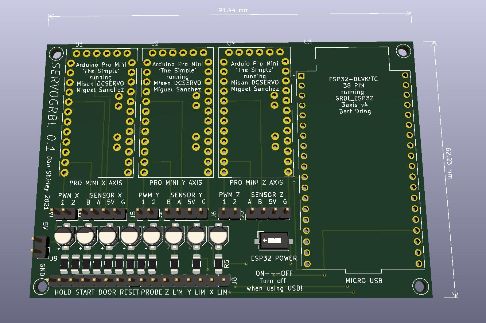

A servo-based CNC breakout board for the ESP32 DEVKITC (NodeMCU ESP32)
SERVOGRBL is a breakout board for the ESP32 DEVKITC to allow GRBL control of a 3 axis CNC machine using DC motors as servos instead of stepper motors. Currently it is in the first prototype itteration, version 0.1.
SERVOGRBL uses 3 Arduino Pro Minis in place of stepper drivers to convert STEP/DIR signals into PWM with encoder feedback on each channel.
This board builds on the incredible work of Bart Dring (GRBL_ESP32) and Miguel Sanchez (DCSERVO), to whom credit for its function is due.
Build notes:
- Pro Mini header pins
- Flashing Pro Minis
- H-Bridges
- Power
Use downward-pointing header pins on all pins of the Pro Minis, rather than the 90 degree headers usually provided
Uploading the sketch to the Pro Minis must be done prior to installation using a USB-to-TTL serial converter to upoload the sketch. The "Uno" version of DCSERVO should be used for the Pro Minis.
H-bridges are used to drive the motors. Initial tests will be performed using 3x "IBT 2" modules (dual BTS7960). A note on these units: be sure to remove the heatsink and apply a good layer of thermal paste before re-attaching. The paste transfers heat through the PCB vias to the heatsink which is on the opposite side of the board to the chip. The paste needs to squeeze out through the vias on the other side behind the legs and along the top edge of the package. Thermal paste which dries hard will be best for this.
The board requires an external 5v power supply as none is included onboard. Power consumption is probably around 30mA. A power switch is provided for the ESP32 as the 5V supply must be disconnected when using USB to prevent overpowering the board. A separate supply is also required for the motor voltage to the H-bridges eg. 24V.